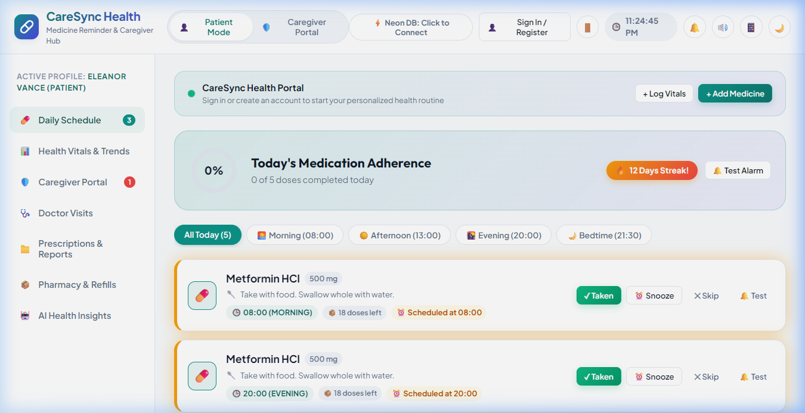
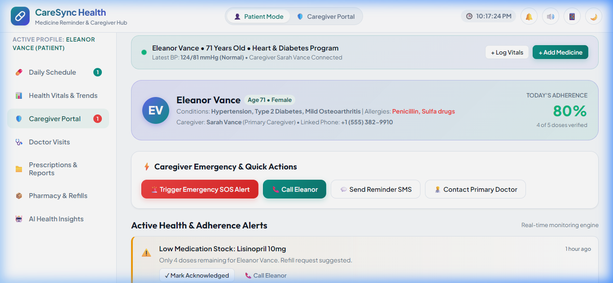
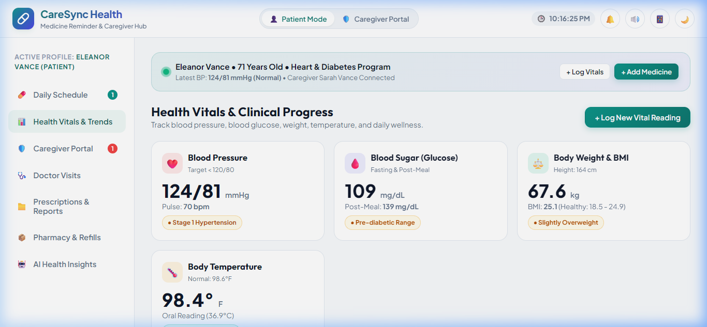
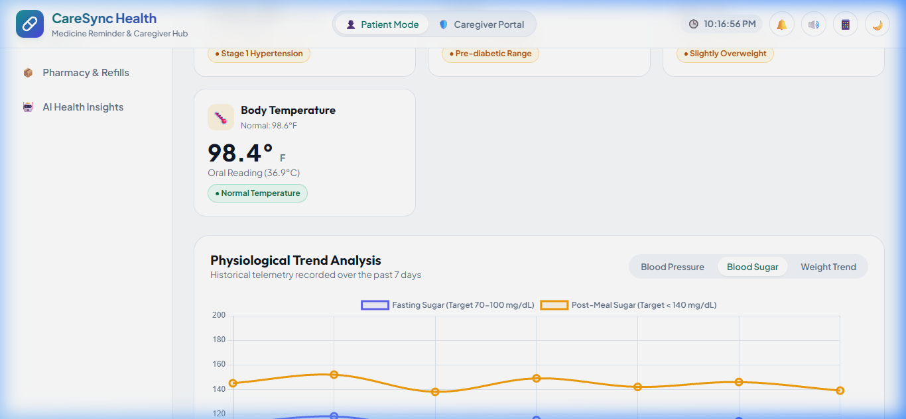
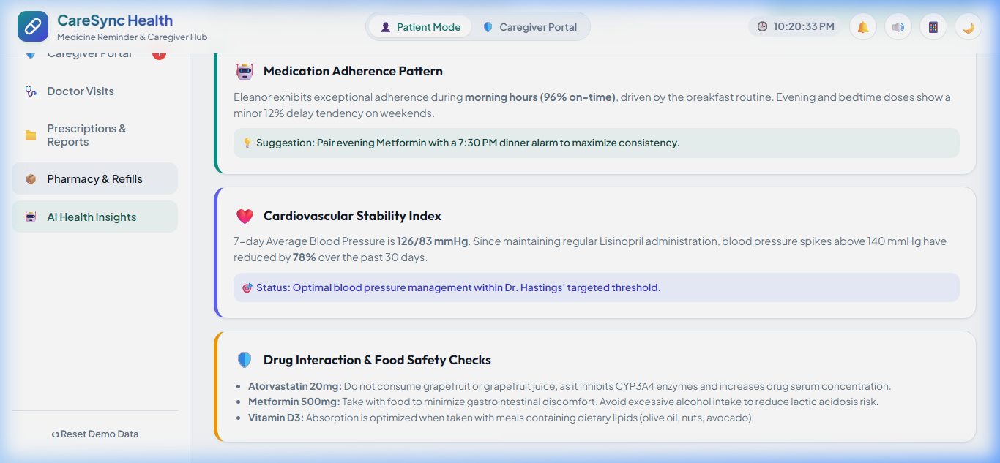
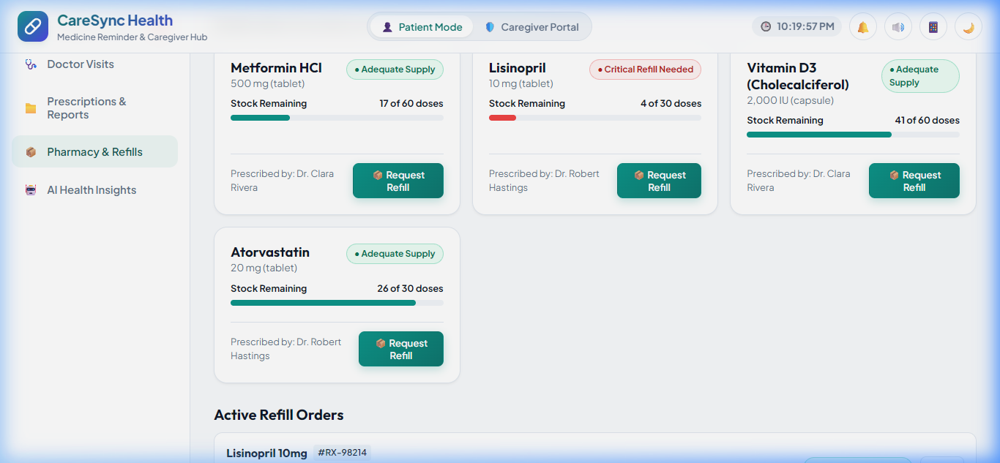
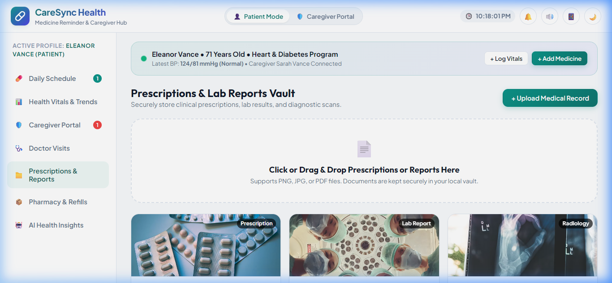
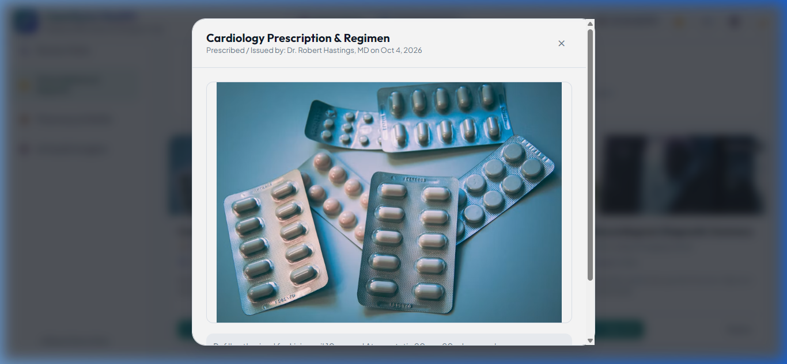
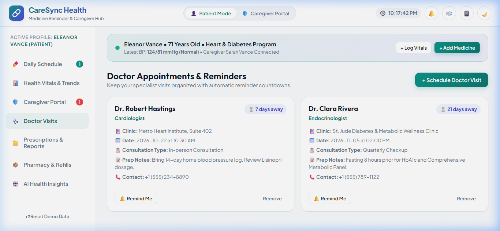

Visual reports, real-time dashboards, charts, and caregiver telemetry outputs.

Outputs Displayed: Daily adherence progress ring, adherence streak counter, morning/afternoon/evening schedule cards, dose status flags (Taken, Due, Missed), and meal instructions.

Outputs Displayed: Real-time verified patient adherence percentage, active alert feed (missed doses, elevated vitals), emergency SOS triggers, and quick call/SMS shortcuts.

Outputs Displayed: Blood Pressure with AHA stages, Blood Sugar with fasting ranges, Weight & BMI calculation chip, Body Temperature, and patient comfort slider status.

Outputs Displayed: Dynamic Chart.js time-series curve showing fasting vs postprandial glucose values, safe target band shading, and interactive hover inspection tooltips.

Outputs Displayed: Scientifically calibrated daily caloric target (TDEE), custom macronutrient ratios (Carbs/Protein/Fat), meal plans, and disease-specific dietary precautions.

Outputs Displayed: Pill inventory fuel gauges with days remaining, low-stock alerts (< 7 days), 1-click refill ordering simulator, and order tracking status stepper.

Outputs Displayed: Document cards for digitized prescriptions, blood test panels, and imaging reports with category tags, doctor credentials, and upload timestamps.

Outputs Displayed: Fullscreen high-resolution prescription inspection viewer with doctor notes, diagnostic annotations, and download action controls.

Outputs Displayed: Specialist appointment cards (Cardiologist, Endocrinologist) with countdown badges, clinic locations, and pre-consultation fasting instructions.